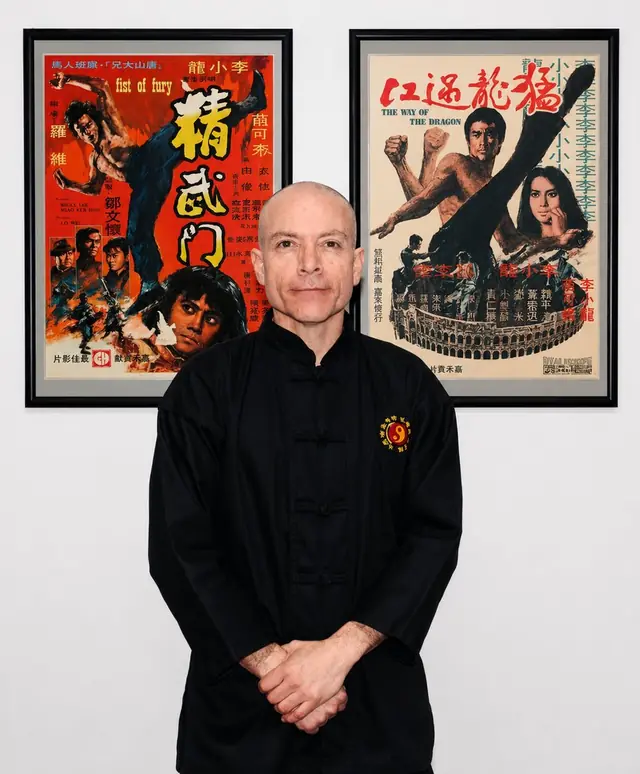

Self-defence & Jeet Kune Do classes in Melbourne
The Direct
Lineage
of Bruce Lee.
Practical self-defence for teens (14+) and adults, taught by Sigung Ricardo Vargas — a second-generation instructor certified by Sifu Jerry Poteet and Sigung Richard Bustillo, both direct students of Bruce Lee. Small groups, beginners welcome, and your first class is free.
Or book a free trial class →
Find the right class for you.
Group classes Tuesday & Thursday 7 pm and Saturday 9:30 am in Maidstone, plus private lessons by appointment. Teens 14+ and adults.
Self-defence classes Melbourne
Awareness, distance, simple strikes and escapes — practical skills in a small group.
Jeet Kune DoJeet Kune Do classes
Bruce Lee's art in his direct lineage, from Foundation to Mastery.
WomenWomen's self-defence
Supervised, at your pace, with no compulsory sparring — and a women-only workshop on the way.
One-on-onePrivate lessons
60-minute sessions with Sigung Ricardo Vargas, built around your goals.
South AustraliaJeet Kune Do in Adelaide
Train the lineage in Adelaide with affiliated instructor Sifu Peter Pitrakkos.
GuidesRead the blog
What JKD is, how it compares to Wing Chun, and what to expect in your first class.
The Art of
Expressing the
Human Body.
Jeet Kune Do — the Way of the Intercepting Fist — is a philosophy of personal development founded by Bruce Lee. Far more than a fighting system, it is a method for self-awareness, efficiency, and adaptability across every domain of life.
By integrating principles from diverse disciplines, JKD encourages each practitioner to absorb what is useful, discard what is not, and add what is uniquely their own. It is a path of continuous self-improvement — empowering you to respond to life's challenges with precision, confidence, and authenticity.
Explore The Way →
"Using no way as way,— Sijo Bruce Lee
having no limitation as limitation."

Sigung
Ricardo Vargas
A second-generation student of Bruce Lee, Sigung Vargas carries one of the most authentic lineages of Jeet Kune Do in the world — personally trained and certified by Sifu Jerry Poteet and Sigung Richard Bustillo.
Blending three decades of practice with academic credentials in philosophy and theology, he offers a rare and powerful approach that unites combat skill, personal growth, and purposeful living.
- Full Instructor Certification — February 17, 2015
- Founder, Adelaide Kwoon (2011) · Melbourne HQ
- U.S. Martial Arts Hall of Fame · Outstanding Martial Artist of the Year (2013)
- Master's Degree in Theology and Philosophy
Three Stages.
One Lifelong Journey.
Whether you are taking your first step or refining a lifelong practice, the academy offers a structured path from foundation to mastery.
The Tao of
Jeet Kune Do
12-Week Beginner Program
Build the fundamentals of philosophy, guard, footwork, striking, kicking, and trapping under direct supervision.
Discover →The Combat
Scientist
Intermediate Curriculum
Jun Fan Kickboxing, wooden dummy, grappling, and the five ways of attack — refined through scientific application.
Discover →The Philosophical
Warrior
Private Mentorship
One-on-one guidance with Sigung Vargas for advanced students seeking deeply personalised development.
Discover →The Masters Who
Forged the Path.
Seven extraordinary martial artists trained directly under Sijo and shaped the Jeet Kune Do tradition — two of them personally trained Sigung Vargas. Each is a living link to the source.
What our students say.
Self-defence classes in Maidstone, Melbourne's inner west.
About 10 km from the CBD, close to Footscray, Maribyrnong and Sunshine — with free parking and a bus stop at the door.
- Address
- Unit 6 / 72-80 Hampstead Rd, Maidstone VIC 3012
- Classes
- Tue & Thu 7:00 pm · Sat 9:30 am (60 min)
- Parking
- Free parking at Hampstead Rd
- Bus
- Route 406 — stop Wattle Rd/Hampstead Rd
- Phone
- 0459 785 073
Students travel to us from:
- Maidstone
- Footscray
- Maribyrnong
- Sunshine
- Avondale Heights
- Essendon
- Moonee Ponds
- Brunswick
- Broadmeadows
Guides for beginners

What Is Jeet Kune Do? A Clear Guide to Bruce Lee's Martial Art
What is Jeet Kune Do? Bruce Lee's 1967 martial art explained: meaning, principles, ranges, training today and where to learn authentic JKD in Melbourne.
Read →
What is the best martial art for self-defence? An honest comparison
Is there a best martial art for self-defence? An honest look at Krav Maga, BJJ, Muay Thai, boxing, Wing Chun and JKD, from a Melbourne academy.
Read →
Your First Jeet Kune Do Class: What to Expect
Your first Jeet Kune Do class in Melbourne: how booking works, what to wear, the 60-minute class, fitness, sparring and etiquette. First class free.
Read →Questions About
Training With Us.
Straight answers about self-defence, Jeet Kune Do, prices and getting started.
What is Jeet Kune Do?
Jeet Kune Do (JKD) is the martial art and philosophy founded by Bruce Lee. It is not a fixed style but a method of self-discovery — absorb what is useful, discard what is not, and add what is uniquely your own. At Jeet Kune Do Legacy Academy we teach authentic JKD in Bruce Lee's direct lineage.
Is Jeet Kune Do good for self-defence?
Yes. Bruce Lee designed Jeet Kune Do for real confrontations, not sport: it trains awareness, distance, direct strikes and escapes from grabs. At Jeet Kune Do Legacy Academy in Maidstone, Melbourne, beginners learn practical self-defence from the first class, with sparring only from intermediate level and always supervised.
Do I need to be fit to start self-defence classes?
No. You start at your own level and the instructor scales every drill, so fitness comes from training rather than before it. Classes last 60 minutes, groups are small and complete beginners are welcome from 14 years old.
Do you offer women's self-defence in Melbourne?
Yes. Women train in all our regular classes in Maidstone, where every drill is supervised and sparring is never compulsory. A women-only self-defence workshop is also being planned — register your interest on our women's self-defence page.
Which suburbs do your students come from?
Most students come from Melbourne's inner west and north: Maidstone, Footscray, Maribyrnong, Sunshine, Avondale Heights, Essendon, Moonee Ponds, Brunswick and Broadmeadows. The school is at Unit 6 / 72-80 Hampstead Rd, Maidstone, with free parking and bus 406 nearby.
Where is Jeet Kune Do Legacy Academy located?
Our school is at Unit 6 / 72-80 Hampstead Rd, Maidstone VIC 3012, in Melbourne's inner west (near Maribyrnong and Footscray). In Adelaide, affiliated instructor Sifu Peter Pitrakkos runs his own school in the same lineage.
Who is the head instructor?
Sigung Ricardo Vargas, a second-generation Jeet Kune Do instructor certified by Sifu Jerry Poteet and Sigung Richard Bustillo — both direct students of Bruce Lee.
Do I need previous experience to start?
No. Most students start with no martial-arts background. The 12-week Foundation program is built for complete beginners, and every session includes one-on-one corrections.
How much do self-defence classes cost in Melbourne?
Your first class is free. After that, training at Jeet Kune Do Legacy Academy in Maidstone costs A$175 for 5 classes, A$350 for 12 classes, A$240 for a Monthly Unlimited membership or A$650 for 3 months unlimited. There is an enrolment fee and no lock-in contract.
How do I book my first class?
Leave your details on the free class form or call 0459 785 073. Sigung Vargas calls you within 24 hours for a short chat about your goals and books a class time that suits you — Tuesday or Thursday at 7 pm, or Saturday at 9:30 am.
Become a Third-Generation
Student of Bruce Lee.
Small groups and complete beginners welcome. Leave your details and Sigung Vargas will call you within 24 hours to book your free class.
Book Your Free Class →